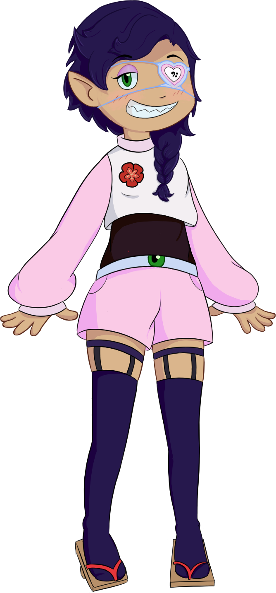

Bienvenides
Soy Kasaraku Maru, una karakasa que le
gusta dibujar y pasar tiempo con sus amigues.
En esta página web encontrarán mis trabajos, mis comisiones, terminos de
servicio y mis procesos en los dibujos que estoy haciendo.
Hago streaming en twitch donde hago mis trabajos o juego un rato.